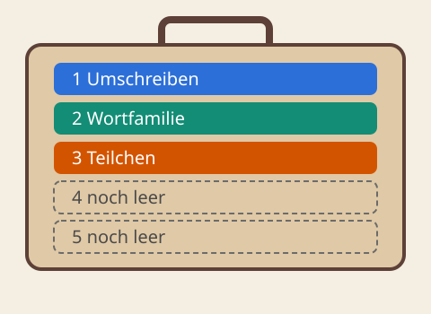

Werkzeug 3: Verben mit Teilchen
Mit einem KI-Tutor lernen
Ein KI-Tutor erklärt dir diese Seite und hilft dir bei den Aufgaben. Wähl deinen Assistenten:
Mit Claude öffnen Mit ChatGPT öffnen Mit Mistral Vibe öffnen
Du nutzt dein eigenes Konto beim Anbieter. Der Assistent ist kein Angebot von lernapps.net: lernapps liefert nur Inhalte und Aufgaben. Die Wahl gilt für alle Seiten, nur auf diesem Gerät.
Ein Infoblatt für Gastschüler
Mr Hill hat Sophie ein Infoblatt eines Austauschprogramms gegeben. Es ist in einfachem Englisch geschrieben, und fast jede Zeile hat ein Verb mit Teilchen. Das kannst du danach: Du liest ein Verb mit Teilchen als eine Einheit und benutzt es richtig im Satz.
Welcome pack for guest students
(1) Please read this sheet before you set off.
(2) Fill in the form on the last page and hand it in at the school office on your first day.
(3) At the station, your host family will pick you up. If you are late, don't give up: call the number on your card.
(4) Your host family will look after you. Please find out the house rules in the first week.
(5) Get up on time, because the school bus doesn't wait.
(6) Take off your shoes at the door. Turn off the lights when you leave your room.
(7) In winter, put on a warm coat.
| Englisch | Deutsch |
|---|---|
| host family | die Gastfamilie |
| fill in | ausfüllen |
| hand in | abgeben |
| set off | losfahren |
Aufgabe
Lösung
Er soll es im Schulbüro abgeben. richtige Antwort
In Zeile (2) steht hand it in at the school office.
Er soll es zu Hause lassen.
Das Blatt sagt, dass man es im Schulbüro abgibt, nicht dass man es zu Hause lässt.
Er soll es der Gastfamilie geben.
In Zeile (2) steht, dass man es im Schulbüro abgibt, nicht bei der Familie.
Das Formular wird ausgefüllt und am ersten Tag im Schulbüro abgegeben.
Die Werkzeugkarte Teilchen

© CC-BY-4.0Der Koffer hat jetzt drei Werkzeuge.
| Schritt | Was du tust | Beispiel |
|---|---|---|
| 1 | Lies Verb und Teilchen als eine Einheit. Übersetze nicht Wort für Wort. | grow up: aufwachsen, nicht „wachsen hinauf“ |
| 2 | Prüfe den Sinn im Satz oder im Wörterbuch. | sit down: sich hinsetzen |
| 3 | Bei Verben, die man trennen kann: Ein Pronomen wie it steht vor dem Teilchen, ein Nomen davor oder dahinter. | write it down · write down the word · write the word down |
Merke
Das Teilchen ändert den Sinn des Verbs oft ganz. Verb und Teilchen bleiben eine Einheit. Nicht jedes Verb mit Teilchen lässt sich trennen: Bei manchen steht das Teilchen immer direkt hinter dem Verb.
Übung
Aufgabe
Lösung
Zeile (3) richtige Antwort
In Zeile (3) steht don't give up.
Zeile (5)
In Zeile (5) geht es darum, rechtzeitig aufzustehen.
Zeile (6)
In Zeile (6) geht es um Schuhe und Licht.
give up heißt aufgeben.
Aufgabe
Lösung
Richtige Antwort: give up – aufgeben; look after – sich kümmern um; find out – herausfinden; take off – ausziehen; pick up – abholen
Jedes Verb mit Teilchen hat einen eigenen Sinn, den man nicht aus den Einzelwörtern ableitet.
Aufgabe
Wähle das richtige Teilchen.
Tipp
Frage dich, welches Teilchen zur deutschen Bedeutung passt.
- Mach bitte das Radio aus. → Please turn … the radio.
- Zieh bitte deine Jacke an. → Please put … your jacket.
- Steh bitte auf. → Please get ….
Lösung
- Please turn off the radio.
- Please put on your jacket.
- Please get up.
Aufgabe
Lösung
Please turn off it.
Ein Pronomen steht vor dem Teilchen, nicht dahinter.
Please turn it off. richtige Antwort
Das Pronomen it steht zwischen turn und off.
Please off turn it.
In diesem Satz steht das Teilchen nicht vor dem Verb.
Bei einem Pronomen steht das Teilchen nach dem Objekt.
Aufgabe
Schreibe den Satz auf Englisch.
Tipp
Verb und Teilchen gehören zusammen. Prüfe, ob das Objekt ein Nomen oder ein Pronomen ist.
- Gib nicht auf!
- Er kümmert sich um den Hund.
- Wir ziehen unsere Hüte an.
Lösung
- Don't give up! (auch richtig: Do not give up!)
- He looks after the dog. (auch richtig: He is looking after the dog.; He takes care of the dog.; He is taking care of the dog.)
- We put on our hats. (auch richtig: We put our hats on.; We are putting on our hats.; We are putting our hats on.)
Selbst entscheiden
Offene Aufgabe
Wähle eine Regel des Infoblatts, die du sinnvoll oder nicht sinnvoll findest. Schreibe in zwei bis drei englischen Sätzen deine Meinung und benutze dabei ein Verb mit Teilchen.
Eine gute Antwort enthält:
Lösung
Ein Beispiel: I think the rule about the shoes is fine because the floor stays clean. Everyone should take off their shoes at the door.
Wie es weitergeht
Das dritte Werkzeug liegt im Koffer. Auf der nächsten Seite gibt es ein Warnschild für Wörter, die wie deutsche aussehen und etwas ganz anderes bedeuten.
Fehler gefunden oder eine Idee für diese App?